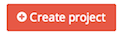

Creating a project
From Screendoor, it's easy to create a new project. Just click the  button or select "New Project" from the Projects dropdown.

Using a template
If one of our templates corresponds to the type of project you would like to create, select the appropriate template under "Type." Templates provide built-in forms and settings, as well as template-specific functionality {do they?}. However, note that the template is just a helpful starting point, and that you can always customize your project after you have created it.

Custom project (no template)
Select the "Custom" type to create a custom project without a template. Custom projects don't have any pre-configured options, so you can set it up according to your project's specifications.
Demo projects
If you just want to see a demo project, click the "create an example project" link at the bottom of the "Create project" pop-up. Demo projects are a good way to get a feel for how a project works in Screendoor, and also include sample responses that you can play around with. Note that demo projects will be automatically deleted after 30 days.